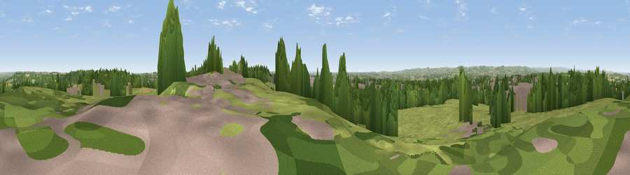

Viewpoint near Tibshelf
#26311 in England · top 36% of its area beats it · near TibshelfWhere it is
The exact computed spot (SK 45475 60675). Click the marker for map links.
The view, rendered

A 360° render of this exact spot computed from the terrain model, tree cover and land cover — summer colours, afternoon light, calibrated against photographs of famous viewpoints. Real trees, hedges and buildings will differ in detail.
The panorama
Grey silhouette: terrain skyline in each direction (720 bearings, Earth curvature and refraction included). Dashed green: skyline with trees (+15 m) and buildings (+8 m) as obstacles. Blue strip: how far the ground is visible on each bearing.
Where the view opens
Wedge length = distance to the farthest visible ground on that bearing (vegetation-aware). Rings at 10, 25 and 50 km.
What fills the view
48% grassland · 24% woodland · 16% built-up · 13% cropland
Angular shares of the visible panorama (visual magnitude), not map area. Landscape diversity 0.54 (0–1 Shannon).
Key numbers
More beautiful places nearby
The staircase of upgrades: each row has a higher view potential than everything closer. Driving times are estimates from straight-line distance, calibrated against real road routing — check an actual route before setting out.
| Place | Direction | Drive | Score |
|---|---|---|---|
| Viewpoint near Stainsby | N · 4 km | ~9 min | 53.9 |
| Viewpoint near Palterton | NNE · 8 km | ~15 min | 58.5 |
| Viewpoint near Palterton | NNE · 8 km | ~16 min | 59.9 |
| Viewpoint near Brackenfield | W · 10 km | ~19 min | 68.3 |
| Crich Stand | WSW · 12 km | ~23 min | 73.0 |
| Alport Height | WSW · 17 km | ~30 min | 73.9 |
| Tissington Hill | WSW · 31 km | ~49 min | 75.5 |
| Viewpoint near Woodhouse Eaves | S · 46 km | ~67 min | 77.7 |
53.14129, -1.32163 · source: screening · position refined by local search. Computed location — check access rights before visiting.